2 Background
2.1 Approach
Fish passage assessments in British Columbia follow the provincial protocol (MoE 2011), which scores barrier risk at road-stream crossings from structural parameters — culvert embedment, slope, outlet drop, and culvert diameter relative to channel width. The “Barrier” and “Potential Barrier” classifications represent passability for juvenile salmon or small resident rainbow trout under any flow conditions that may occur throughout the year (Clarkin et al. 2005; Bell 1991; Thompson 2013). The thresholds are deliberately conservative, so the classifications are risk scores rather than determinations of whether fish actually move through. Many structures classified as “Barrier” still pass some species and life stages at some flows, and natural features in adjacent reaches can be as limiting as the structure itself. Passability can be quantified in other ways — fish length, swim speed, and species physiology all affect connectivity outcomes — and finer-grained scoring methods exist for structures already classified as barriers (Bourne et al. 2011; Kemp and O’Hanley 2010; Washington Department of Fish & Wildlife 2009). Whether a remediation changes outcomes for fish therefore depends on the habitat upstream, the species and life stages in question, and the broader condition of the reach the structure connects to — not the classification alone.
The provincial inventory contains thousands of structures on fish-bearing streams. Replacement at a typical forest road culvert is in the six-figure range; structural replacements on highway and rail corridors run into seven and eight figures. Funding for restoration is finite and split across multiple programs and partners. Prioritization across the inventory therefore carries more weight than any individual assessment — the assessment establishes what could be fixed, while prioritization decides what should be.
Authority and funding for these structures are distributed across rail authorities, highway ministries, forestry licensees, and private landowners. Each operates under its own mandate, performance metrics, and budget cycle. Advancing restoration involves working inside organizations whose primary mandate is moving goods, maintaining roads, or harvesting timber — not aquatic ecological outcomes. The work proceeds through shared data, sustained relationships, and incremental progress across multiple budget years and field seasons.
Many road and rail corridors were built without consideration of fish passage or floodplain function. Damage frequently extends beyond the structure at the crossing — channelized streams, dykes that sever lateral connection, drained wetlands, cleared riparian buffers. Replacing a culvert in-kind can restore longitudinal passage while leaving the broader corridor-scale disconnection unaddressed. Understanding where infrastructure constrains watershed function helps distinguish cases where structural replacement is sufficient from cases where remediation needs to address more than the structure itself.
This report compiles the layers used for prioritization in the watershed groups where the work is active: structural assessment data, habitat modelling, climate trajectory, and floodplain extent. Each layer contributes a piece of the picture — what is present, what it could support, how it is changing, and the surrounding watershed context. The work happens over many years across many partners; this report documents one year’s contribution to that effort.
2.2 Project Location
The study area spans from Burns Lake to Valemount, British Columbia, and includes the Francois Lake, Lower Chilako River, Lower Salmon River, Morkill River, Nechako River, Tabor River, Upper Fraser River, and Willow River watershed groups. In 2025 the study area was expanded to include the Tabor River, Willow River, and Lower Salmon River watershed groups.
# grab the latest version when updates happen
# fs::file_copy(
# path = "~/Projects/gis/restoration_bc_2024/exports/maps/fishpassage_2024_sern_summary.jpeg",
# new_path = "fig/fishpassage_2024_sern_summary.jpeg",
# overwrite = TRUE
# )
knitr::include_graphics("fig/fishpassage_2024_fraser.png")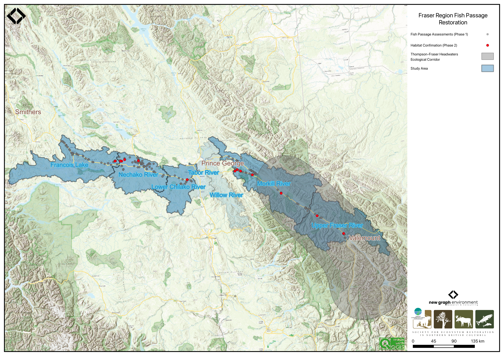
Figure 2.1: Overview map of the Fraser Region study areas
2.3 First Nations
The watersheds described in this report lie within the traditional territories of several First Nations whose relationships with these rivers long predate the assessments presented here. The summaries below are drawn from each Nation’s own published material and are necessarily brief; they are offered as context, not as a description of any Nation’s rights, title, or governance.
2.3.1 Dakelh
The Dakelh (Carrier) people are indigenous to north-central British Columbia, with a deep connection to the region’s waterways. Their name, Dakelh, translates to “people who travel by water,” reflecting their reliance on rivers such as the Lhtakoh (Fraser), Nechakoh (Nechako), and Nak’alkoh (Stuart) for transportation, trade, and sustenance (Hudson 2010).
The Dakelh were key participants in the Grease Trails, trading inland goods for coastal eulachon oil (Hudson 2010). Their Athabaskan language, Dakelh, has declined due to colonial policies, but revitalization efforts are ongoing. Organizations like the Yinka Dene Language Institute work to document and promote Dakelh through education, literacy programs, and linguistic research (The Yinka Déné Language Institute 2025). The Lheidli T’enneh First Nation and local school districts have also developed language programs to preserve and teach Dakelh (Our Language 2025).
The Dakelh people traditionally organize their lands into Keyohs, family-run territories passed down through generations. Each Keyoh is overseen by a Keyohwhudachun (Keyoh Holder), who manages land use and stewardship (Keyoh Huwunliné 2025). Despite historical disruptions, Keyohs remain central to Dakelh identity and land management practices.
2.3.1.1 Lheidli T’enneh
The Lheidli T’enneh First Nation is a Dakelh sub-group whose traditional territory encompasses the Nechakoh (Nechako) River, Lhtakoh (Fraser) River, and Morkill River, and spans from west of Lheidli (Prince George) to Valemount. “Lheidli” translates to “The People from the Confluence of the River,” referring to the meeting of the Nechako (“Nee Incha Koh” — “river with strong undercurrents”) and Fraser (“Ltha Koh” — “Big Mouth River”) rivers in what is now Prince George, British Columbia (Our Story 2025).
Chun T’oh Whudujut (Ancient Forest), a Provincial Park and Protected Area 120 km east of Prince George, lies within Lheidli T’enneh territory. Lheidli people historically visited its thousand-year-old western red cedars from summer fishing camps along the upper Fraser River and gathered medicinal plants there. The stands were slated for logging until their ecological and cultural significance was recognized, and are now protected through a partnership including Lheidli T’enneh, UNBC, local hiking groups, and the Provincial Government (Chun t’oh Whudujut (Ancient Forest) 2025).
2.3.2 Carrier Sekani
The Carrier Sekani Tribal Council unifies six nations west of Lheidli (Prince George) whose traditional territories include the Lhtakoh (Fraser), Nechakoh (Nechako), Tsalakoh (Chilako), Endako, and Nadleh (Nautley) Rivers (“About CSTC and the CSFNs,” n.d.). The Carrier Sekani Tribal Council includes:
- Ts’il Kaz Koh First Nation — located near Burns Lake
- Nadleh Whut’en First Nation — located near Fraser Lake
- Saik’uz First Nation — located near Vanderhoof
- Stellat’en First Nation — located near Fraser Lake
- Takla Nation — located near Takla Lake
- Wet’suwet’en First Nation — located west of Burns Lake
2.3.3 Simpcw
Simpcw, which translates to “People of the Rivers,” is one of the 17 campfires (bands) that make up the Secwepemc, or Shuswap, Nation. Their traditional territory stretches from north of McBride, south to Barrier, and east to Mt. Robson Provincial Park, and includes the North Thompson River and the Upper Fraser River (“About Us – Simpcw,” n.d.).
2.4 Lhtakoh
Known as the Lhtakoh, meaning “rivers within one another” to the Dakelh (Carrier) people, the Fraser River stretches nearly 1,400 kilometers from the Rocky Mountains of Mount Robson Provincial Park to the Strait of Georgia near Vancouver. As the largest salmon-producing river on Canada’s west coast (Bradford and Taylor 2023; “Dakleh Placenames,” n.d.), it plays a crucial economic role in supporting forestry, agriculture, and hydroelectric power generation. Additionally, the Fraser River is vital for fisheries, especially for salmon populations, which are essential to both the local ecosystem and indigenous communities.
The Upper Fraser River is commonly defined as the section of the mainstem north of Quesnel, flowing through the Cariboo and Fraser Plateau regions. Major tributaries include the Nechako, Quesnel, and McGregor rivers (Shaw and Tuominen, n.d.). This vast expanse supports many indigenous groups who utilize the land for cultural, spiritual, and economic practices.
The Upper Fraser River, an 8th order stream, drains an area of 232,134km2 upstream of the McGregor River confluence. The seasonal hydrograph has a single broad peak in early summer due to snow and glacial melt from surrounding mountain ranges (Figure 2.2). The mean annual discharge at station 08KA005 in McBride, located roughly 200km southeast of Prince George, is 200.4m3/s
# get date range for figure caption
# flow_raw <- tidyhydat::hy_daily_flows("08KA005")
# print(start_year <- flow_raw$Date %>% min() %>% lubridate::year())
# print(end_year <- flow_raw$Date %>% max() %>% lubridate::year())
plot1 <- fasstr::plot_longterm_monthly_stats(
station_number = "08KA005",
ignore_missing = TRUE,
add_year = 2023
)
print(plot1$`Long-term_Monthly_Statistics`)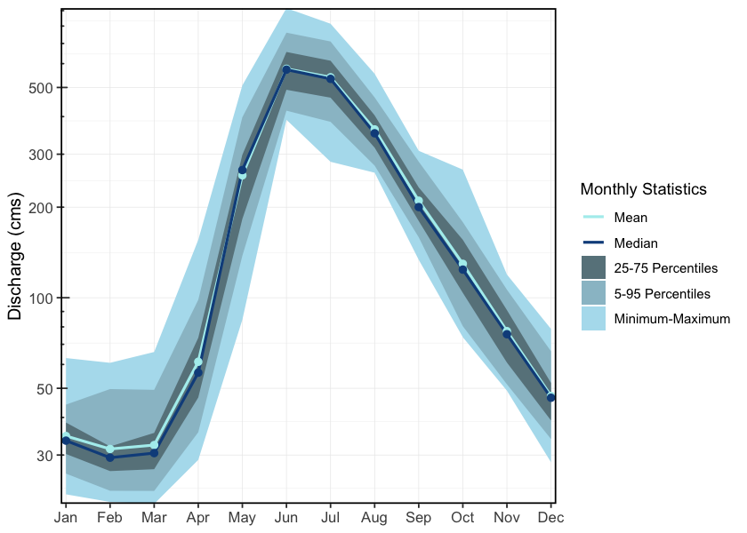
Figure 2.2: Hydrograph for the Fraser River At McBride (Station #08KA005 - Lat 53.30172 Lon -120.14092). Available mean daily discharge data from 1953 to 2023.
2.5 Nechakoh
# nechako
fwapgr::fwa_watershed_at_measure(356362759)
# endako
fwapgr::fwa_watershed_at_measure(356361442) %>% mutate(area_km2 = round(area_ha/100, 1)) %>% mutate(area_km2 = ifelse(area_km2 >= 1000, format(area_km2, big.mark = ",", scientific = FALSE), area_km2)) %>% pull(area_km2)
# chilako
fwapgr::fwa_watershed_at_measure(356363121) %>% mutate(area_km2 = round(area_ha/100, 1)) %>% mutate(area_km2 = ifelse(area_km2 >= 1000, format(area_km2, big.mark = ",", scientific = FALSE), area_km2)) %>% pull(area_km2)
# tabor - not working
fwapgr::fwa_watershed_at_measure(356362703) %>% mutate(area_km2 = round(area_ha/100, 1)) %>% mutate(area_km2 = ifelse(area_km2 >= 1000, format(area_km2, big.mark = ",", scientific = FALSE), area_km2)) %>% pull(area_km2)
# willow
fwapgr::fwa_watershed_at_measure(356360570) %>% mutate(area_km2 = round(area_ha/100, 1)) %>% mutate(area_km2 = ifelse(area_km2 >= 1000, format(area_km2, big.mark = ",", scientific = FALSE), area_km2)) %>% pull(area_km2)
# lower salmon - I belibe this is giving the enire salmon river watershed, not just lower salmon river waterhsed...
fwapgr::fwa_watershed_at_measure(356364485) %>% mutate(area_km2 = round(area_ha/100, 1)) %>% mutate(area_km2 = ifelse(area_km2 >= 1000, format(area_km2, big.mark = ",", scientific = FALSE), area_km2)) %>% pull(area_km2)The Nechako River is an 8th order stream that drains an area of 47,269km2. Beginning at the Nechako Plateau, it flows north toward Fort Fraser, then east to its confluence with the Fraser River in Prince George. The Nechako River has three main tributaries: the Stuart River, the Endako River, and the Chilako River. It has a mean annual discharge of 278.5m3/s at station 08JC002, located near Isle Pierre, approximately 25km downstream of the Stuart River confluence. Upstream at station 08JC001 in Vanderhoof, the mean annual discharge is 140.5m3/s. Flow at Isle Pierre is strongly influenced by inflows from the Stuart River, resulting in higher peak levels and average discharge (Figure 2.3). In contrast, the hydrograph at Vanderhoof shows lower peak levels and mean flows, with peaks occurring in June and August (Figure 2.4).
The Nechako River, meaning “Blackwater people’s river”, is home to the Cheslatta Carrier Nation who are part of the Dakelh people. Traditionally, they lived off the land near Tsetl’adak Bunk’ut “Peak Rock Lake” (Cheslatta Lake), however, in 1952, the construction of the Kenney Dam by the Aluminum Company of Canada (now Rio Tinto Alcan) and the subsequent flooding of the Nechako Reservoir forced the Cheslatta Carrier people to abandon their ancestral lands (“The History of the Cheslatta Carrier Nation,” n.d.; “Dakleh Placenames,” n.d.). This relocation was done with little notice or compensation, causing significant disruptions to their community, culture, and way of life. Despite these challenges, the Cheslatta Carrier Nation has worked to preserve their cultural heritage and advocate for their rights and land restoration.
# get date range for figure caption
# flow_raw <- tidyhydat::hy_daily_flows("08JC002")
# print(start_year <- flow_raw$Date %>% min() %>% lubridate::year())
# print(end_year <- flow_raw$Date %>% max() %>% lubridate::year())
plot1 <- fasstr::plot_longterm_monthly_stats(
station_number = "08JC002",
ignore_missing = TRUE,
add_year = 2023
)
print(plot1$`Long-term_Monthly_Statistics`)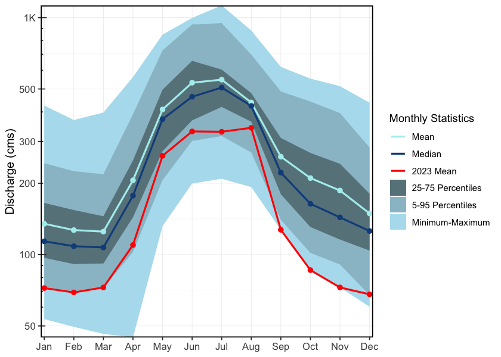
Figure 2.3: Hydrograph for the Nechako River at Isle Pierre, below the confluence of the Stuart River (Station #08JC002). Available mean daily discharge data from 1950 to 2023.
# get date range for figure caption
# flow_raw <- tidyhydat::hy_daily_flows("08JC001")
# print(start_year <- flow_raw$Date %>% min() %>% lubridate::year())
# print(end_year <- flow_raw$Date %>% max() %>% lubridate::year())
plot1 <- fasstr::plot_longterm_monthly_stats(
station_number = "08JC001",
ignore_missing = TRUE,
add_year = 2023
)
print(plot1$`Long-term_Monthly_Statistics`)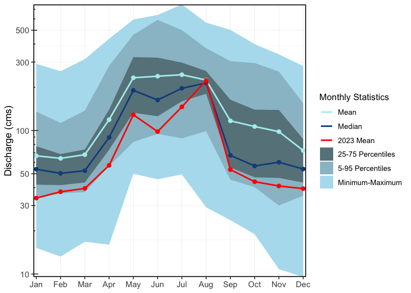
Figure 2.4: Hydrograph for the Nechako River at Vanderhoof (Station #08JC001). Available mean daily discharge data from 1915 to 2023.
2.6 Endako River
The Endako River is a 6th order stream that flows southeast from Burns Lake to Fraser Lake, draining an area of 5,970km2. One hydrometric station (08JB004) was located in Endako but was only active during 1951. The mean annual discharge for that year was 12.7m3/s, with the hydrograph peaking in May–June.
2.7 Tsalakoh
The Chilako River, known as Tsalakoh by the Dakelh people, translates to “beaver paw river”. It is a 6th order stream that flows north from the Nechako Plateau to its confluence with the Nechako River, draining an area of 3,634km2. One hydrometric station (08JC005) is located approximately 10km upstream of the confluence with the Nechako River; however, it was only active from 1960 to 1974. During this period, the mean annual discharge was 13.3m3/s, with peak flows typically occurring in May–June (Figure 2.5).
# get date range for figure caption
# flow_raw <- tidyhydat::hy_daily_flows("08JC005")
# print(start_year <- flow_raw$Date %>% min() %>% lubridate::year())
# print(end_year <- flow_raw$Date %>% max() %>% lubridate::year())
plot1 <- fasstr::plot_longterm_monthly_stats(
station_number = "08JC005",
ignore_missing = TRUE,
add_year = 2023
)
print(plot1$`Long-term_Monthly_Statistics`)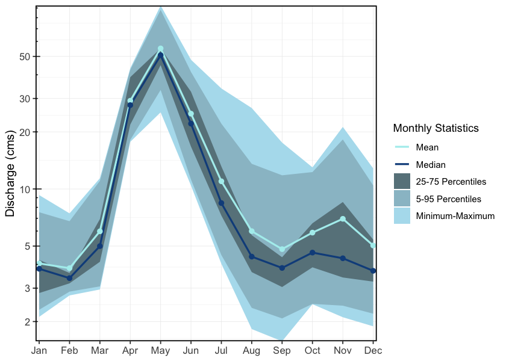
Figure 2.5: Hydrograph for the Chilako River Near Prince George (Station #08JC005 - Lat 53.808891 Lon -122.988892). Available mean daily discharge data from 1960 to 1974.
2.8 Tabor Creek
The Tabor River is a tributary of the Fraser River that drains the eastern portion of the Prince George region. The system originates at Tabor Lake east of Tabor Mountain and flows north–northwest through low-gradient valleys before entering the Fraser River upstream of the Willow River confluence. The watershed is approximately 2,004.5km2 and is classified as a 5th order stream. There are two historic hydrometric stations on Tabor Creek. One located where Tabor Creek crossed Highway 97 which was active from 1974 to 1981, and had a mean annual discharge of 0.8m3/s (Figure 2.6). The second station, active from 1981 to 1999, was located above Swede Creek and had a mean annual discharge of 0.5 (Figure 2.7).
# get date range for figure caption
# flow_raw <- tidyhydat::hy_daily_flows("08KE028")
# print(start_year <- flow_raw$Date %>% min() %>% lubridate::year())
# print(end_year <- flow_raw$Date %>% max() %>% lubridate::year())
plot1 <- fasstr::plot_longterm_monthly_stats(
station_number = "08KE028",
ignore_missing = TRUE
)
print(plot1$`Long-term_Monthly_Statistics`)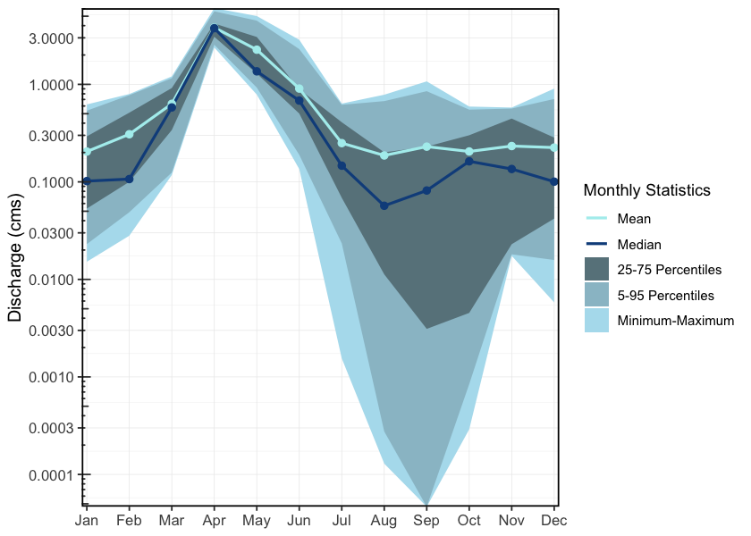
Figure 2.6: Hydrograph for Tabor Creek at Highway 97 Near Prince George (Station #08KE028 - Lat 53.808891 Lon -122.988892). Available mean daily discharge data from 1974 to 1981
# get date range for figure caption
# flow_raw <- tidyhydat::hy_daily_flows("08KE032")
# print(start_year <- flow_raw$Date %>% min() %>% lubridate::year())
# print(end_year <- flow_raw$Date %>% max() %>% lubridate::year())
plot1 <- fasstr::plot_longterm_monthly_stats(
station_number = "08KE032",
ignore_missing = TRUE
)
print(plot1$`Long-term_Monthly_Statistics`)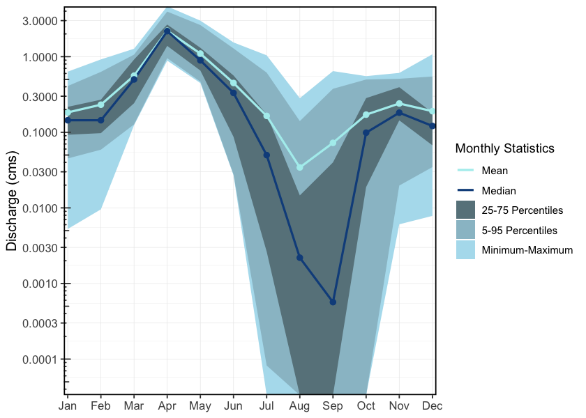
Figure 2.7: Hydrograph for Tabor Creek above Swede Creek near Prince George (Station #08KE032 - Lat 53.808891 Lon -122.988892). Available mean daily discharge data from 1981 to 1999
2.9 Willow River
The Willow River is a tributary of the Fraser River located east of Prince George, British Columbia. The river flows north from its headwaters at Jack of Clubs Lake near the mining community of Wells in the Cariboo Mountains and enters the Fraser River just north of Prince George. At its confluence, the Willow River is classified as a 6th order stream and drains an area of approximately 3,181.3km2. Several historic hydrometric stations have operated on the Willow River (Stations 08KD006, 08KD003, 08KD002), with the most recent data originating from the station above Hay Creek. This station recorded a mean annual discharge of 36.4m3/s and was active from 1976 to 2011 (Figure 2.8).
# get date range for figure caption
# flow_raw <- tidyhydat::hy_daily_flows("08KD006")
# print(start_year <- flow_raw$Date %>% min() %>% lubridate::year())
# print(end_year <- flow_raw$Date %>% max() %>% lubridate::year())
plot1 <- fasstr::plot_longterm_monthly_stats(
station_number = "08KD006",
ignore_missing = TRUE
)
print(plot1$`Long-term_Monthly_Statistics`)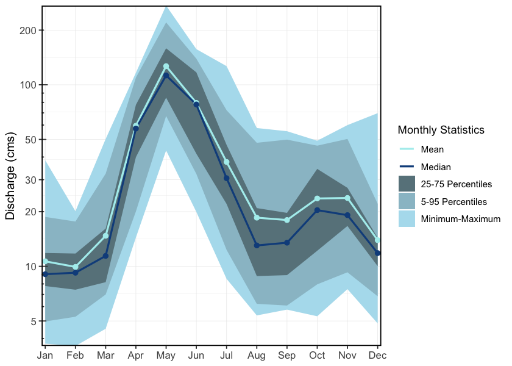
Figure 2.8: Hydrograph for the Willow River above Hay Creek (Station #08KD006 - Lat 54.045556, Lon -122.373056). Available mean daily discharge data from 1976 to 2011
2.10 Lower Salmon River
The Salmon River is a tributary of the Fraser River located north of Prince George, British Columbia. The system drains a low-lying lake district and enters the Fraser River just north of Prince George. The watershed is characterized by predominantly low-relief terrain, with agricultural and residential land use near the confluence. This project focused on the lower Salmon River watershed, defined as the area downstream of the confluence of the Muskeg River and the Salmon River. An active hydrometric station is located approximately 10km upstream of the Fraser River confluence and has a mean annual discharge of 29.3m3/s (Figure 2.9).
# get date range for figure caption
# flow_raw <- tidyhydat::hy_daily_flows("08KC001")
# print(start_year <- flow_raw$Date %>% min() %>% lubridate::year())
# print(end_year <- flow_raw$Date %>% max() %>% lubridate::year())
plot1 <- fasstr::plot_longterm_monthly_stats(
station_number = "08KC001",
ignore_missing = TRUE
)
print(plot1$`Long-term_Monthly_Statistics`)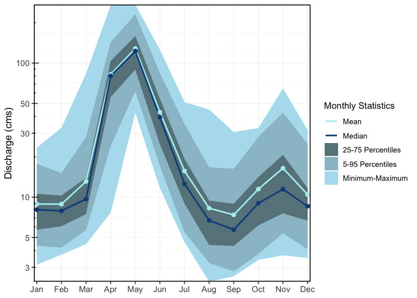
Figure 2.9: Hydrograph for the Salmon River near Prince George (Station #08KC001 - Lat 54.045556, Lon -122.373056). Available mean daily discharge data from 1953 to 2023
2.11 Floodplains and Watershed Function
Floodplains are the low-lying ground adjacent to stream channels that water reclaims during high-flow events. They are not idle margins — they are where rivers do geomorphic work: storing and sorting sediment, exchanging nutrients between terrestrial and aquatic systems, recruiting riparian vegetation, and delivering large woody debris to the channel. For fish, floodplain habitats — side channels, sloughs, beaver complexes, oxbow ponds, and connected wetlands — provide the off-channel conditions that drive freshwater productivity. Juvenile salmonids depend on these areas for low-velocity rearing, overwinter refuge when mainstem conditions become harsh, and high-flow shelter during freshet. In many systems, floodplain habitats are where freshwater survival is won or lost.
Floodplains are often the part of the watershed most compromised by the infrastructure legacy described above. Dykes sever lateral connection; channelization confines the active footprint; drainage eliminates wetland complexes. Mapping floodplain extent at watershed scale therefore complements the linear barrier inventory — prioritization can consider not just whether a structure passes fish but the condition and extent of the off-channel habitat in the reach the structure connects to.
2.12 Fisheries
The Fraser River watershed is the largest salmon-producing river system in British Columbia and one of the most significant on the Pacific Coast. It provides critical habitat for anadromous salmonids, resident freshwater species, and other aquatic organisms. The river supports indigenous, commercial, and recreational fisheries, with Pacific salmon (Oncorhynchus spp.) playing a key ecological and economic role.
The 2019 Big Bar landslide created a significant barrier to salmon migration in the Fraser River, further stressing already vulnerable populations. Extensive mitigation efforts, including rock removal and the construction of a fishway, have helped improve passage, with an estimated 2.9 million salmon successfully navigating the site in 2022. The Upper Fraser Fisheries Conservation Alliance (UFFCA) has played a key role in supporting emergency response and recovery planning, working with federal and provincial agencies to ensure First Nations’ interests and traditional knowledge are incorporated into long-term recovery strategies. This includes ongoing monitoring, habitat restoration, and collaborative management to mitigate future risks to Fraser salmon populations (Upper Fraser Fisheries Conservation Alliance, n.d.).
2.12.1 Lhtakoh
The Fraser River mainstem serves as the primary migration corridor for all anadromous fish species returning to spawn in its tributaries. Historically, the Fraser supported some of the largest sockeye and chinook salmon runs in North America. However, climate change, habitat degradation, and fisheries pressures have led to declining salmon populations in recent decades.
Upper Fraser sockeye populations have been in decline for several decades, likely due to reduced flows and altered water temperatures, affecting migration and spawning success (Levy and Nicklin 2018). The Early Stuart and Late Stuart sockeye are now classified as “Endangered” by COSEWIC (COSEWIC 2017). Under the Wild Salmon Policy, several Upper Fraser sockeye conservation units have been classified as “red-zoned” (Levy and Nicklin 2018).
In 2005, Nesbit et al. (2005) outlined key fisheries areas in the upper Fraser River watershed as the McLennan River, Swift Creek, and the upper mainstem of the Fraser River near Valemount and Tête Jaune Cache. These systems are known to support chinook salmon, with documented spawning in both Swift Creek and the McLennan River. At the time of reporting by Nesbit et al. (2005), two Wildlife Habitat Areas (WHA 3155 and WHA 6012) were designated in the Tête Jaune Cache area based on high fisheries values. WHA 3155 encompassed the confluence of the McLennan and Fraser Rivers and was recognized as the largest chinook spawning area in the upper Fraser system. WHA 6012 protected an adjacent side channel further downstream, which was identified as important juvenile rearing and refuge habitat during high flow events. Although both WHAs have since been removed, their prior designation underscores the ecological importance of the area.
Swift Creek is the site of ongoing conservation hatchery efforts by the Spruce City Wildlife Association (SCWA), which has operated a volunteer-run hatchery since 1987. Following upgrades in 2020, it is now considered the most technologically advanced hatchery in the province. Focused on restoring upper Fraser River chinook, which are listed as “Endangered” by COSEWIC (COSEWIC 2019), SCWA releases thousands of chinook fry into Swift Creek each spring as part of broader recovery initiatives targeting key spawning systems in the region (Spruce City Wildlife Association 2023).
Three sub-watersheds within the upper Fraser River basin are designated as Fisheries Sensitive Watersheds (FSWs) due to the presence of sensitive fish species, including chinook salmon and bull trout. The Goat River and Milk River watersheds have held FSW status since 2013 (FLNRORD 2004a), and the Walker Creek watershed has been designated since 2004 (FLNRORD 2004b).
The importance of salmon in the upper Fraser is strongly reflected in Valemount’s community identity, education, and ecotourism initiatives. Public engagement with the salmon run is encouraged through accessible viewing areas at George Hicks Regional Park on Swift Creek, the Fraser River at Tête Jaune Cache, and along the McLennan River—locations that serve both as local gathering points and platforms for increasing awareness of salmon life cycles and watershed stewardship (Tourism Valemount, n.d.).
2.12.2 Nechakoh
The Nechako River, a tributary of the Fraser River, supports Chinook salmon populations and serves as a migration corridor for sockeye salmon that spawn in the Stuart and Nadina/Francois Basins. Since the construction of the Kenney Dam in the 1950s, flows in the Nechako River have been regulated by Rio Tinto Alcan for hydroelectric power generation at the Kemano Generating Station on the Pacific Coast. In response to concerns over impacts on Nechako Chinook and Upper Fraser sockeye, flow management practices have been implemented. Since 1987, the Nechako Fisheries Conservation Program (NFCP) has operated an annual monitoring program, focussed on Nechako Chinook and migratory sockeye salmon designed to monitor the effectiveness of conservation measures specified in the 1987 Settlement Agreement between Canada, British Columbia, and Alcan (Levy and Nicklin 2018).
The Nechako River also supports a genetically distinct and endangered population of white sturgeon with low natural recruitment. To address this decline, the Nechako White Sturgeon Recovery Initiative (NWSRI) was established, implementing conservation measures such as the Nechako White Sturgeon Conservation Centre. The facility focuses on conservation aquaculture to maintain genetic diversity and support population recovery. Since 2006, the NWSRI has been releasing tagged juvenile sturgeon annually into the Nechako River to aid in species restoration (“Nechako White Sturgeon Recovery Initiative | Home,” n.d.).
Indigenous fisheries organizations, including individual First Nations, the Carrier Sekani Tribal Council, and the Upper Fraser Fisheries Conservation Alliance (UFFCA), are actively involved in fisheries management in the Nechako watershed. These organizations work to support conservation while ensuring the sustainability of Indigenous fisheries, which have cultural and subsistence importance (Upper Fraser Fisheries Conservation Alliance, n.d.).
2.12.3 François Lake
François Lake is one of the largest natural lakes in BC and supports landlocked Kokanee (O. nerka), as well as migratory sockeye salmon that access the lake via the Stellako River. François Lake is a key rearing area for juvenile salmon before migrating to the Fraser River.
2.12.4 Morkill River
The Morkill River, a tributary to the upper Fraser, supports populations of bull trout, mountain whitefish, and rainbow trout. While salmon presence in the system is limited, the Morkill provides cold water inputs to the Fraser River, which may offer thermal refuge for migrating salmonids during warm summer months.
2.12.5 Salmon Stock Assessment Data
Fisheries and Oceans Canada stock assessment data for the study area was accessed via the NuSEDS-New Salmon Escapement Database System through the Open Government Portal (Fisheries and Oceans Canada, n.d.). Records are presented in Appendix - Salmon Stock Assessment Data.
2.12.6 Fish Species
Historical fish observations recorded in the Francois Lake, Lower Chilako River, Lower Salmon River, Morkill River, Nechako River, Tabor River, Upper Fraser River, and Willow River watershed groups are summarized in Appendix - Fish Species by Watershed Group (MoE 2024a).
A review of available fisheries data, for the Francois Lake, Lower Chilako River, Lower Salmon River, Morkill River, Nechako River, Tabor River, Upper Fraser River, and Willow River watershed groups, stratified by different habitat characteristics can provide insight into which habitats may provide the highest intrinsic value for fish species based on the number of fish captured in those habitats in past assessment work (Figures 2.10 - 2.11 - 2.12). It should be noted however that it should not be assumed that all habitat types have been sampled in a non-biased fashion or that particular sites selected do not have a disproportionate influence on the overall dataset composition (ie. fish salvage sites are often located adjacent to construction sites which are more commonly located near lower gradient stream reaches).
# Remove the 1 steelhead observation from these csvs because is it likely a mistake
fiss_sum_grad <- readr::read_csv(file = 'data/inputs_extracted/fiss_sum_grad.csv') |>
dplyr::filter(species_code != "ST")
fiss_sum_width <- readr::read_csv(file = 'data/inputs_extracted/fiss_sum_width.csv')|>
dplyr::filter(species_code != "ST")
fiss_sum_wshed <- readr::read_csv(file = 'data/inputs_extracted/fiss_sum_wshed.csv') |>
dplyr::filter(species_code != "ST")my_caption <- paste0(
"Summary of historic fish observations vs. stream gradient category for the ",
knitr::asis_output(wsg_names) |> knitr::combine_words(),
" watershed groups."
)
fiss_sum_grad %>%
dplyr::select(-gradient_id) |>
fpr::fpr_kable(caption_text = my_caption,
scroll = gitbook_on)| species_code | Gradient | Count | total_spp | Percent |
|---|---|---|---|---|
| BT | 0 - 3 % | 57 | 109 | 52 |
| BT | 03 - 5 % | 14 | 109 | 13 |
| BT | 05 - 8 % | 19 | 109 | 17 |
| BT | 08 - 15 % | 12 | 109 | 11 |
| BT | 15 - 22 % | 7 | 109 | 6 |
| CH | 0 - 3 % | 168 | 186 | 90 |
| CH | 03 - 5 % | 15 | 186 | 8 |
| CH | 05 - 8 % | 2 | 186 | 1 |
| CH | 08 - 15 % | 1 | 186 | 1 |
| CM | 0 - 3 % | 3 | 4 | 75 |
| CM | 08 - 15 % | 1 | 4 | 25 |
| CO | 0 - 3 % | 393 | 491 | 80 |
| CO | 03 - 5 % | 74 | 491 | 15 |
| CO | 05 - 8 % | 13 | 491 | 3 |
| CO | 08 - 15 % | 7 | 491 | 1 |
| CO | 15 - 22 % | 3 | 491 | 1 |
| CO | 22+ % | 1 | 491 | 0 |
| CT | 0 - 3 % | 391 | 572 | 68 |
| CT | 03 - 5 % | 87 | 572 | 15 |
| CT | 05 - 8 % | 65 | 572 | 11 |
| CT | 08 - 15 % | 25 | 572 | 4 |
| CT | 15 - 22 % | 3 | 572 | 1 |
| CT | 22+ % | 1 | 572 | 0 |
| DV | 0 - 3 % | 414 | 940 | 44 |
| DV | 03 - 5 % | 162 | 940 | 17 |
| DV | 05 - 8 % | 177 | 940 | 19 |
| DV | 08 - 15 % | 149 | 940 | 16 |
| DV | 15 - 22 % | 27 | 940 | 3 |
| DV | 22+ % | 11 | 940 | 1 |
| PK | 0 - 3 % | 78 | 87 | 90 |
| PK | 03 - 5 % | 8 | 87 | 9 |
| PK | 08 - 15 % | 1 | 87 | 1 |
| RB | 0 - 3 % | 813 | 1139 | 71 |
| RB | 03 - 5 % | 138 | 1139 | 12 |
| RB | 05 - 8 % | 77 | 1139 | 7 |
| RB | 08 - 15 % | 95 | 1139 | 8 |
| RB | 15 - 22 % | 11 | 1139 | 1 |
| RB | 22+ % | 5 | 1139 | 0 |
| SK | 0 - 3 % | 44 | 45 | 98 |
| SK | 08 - 15 % | 1 | 45 | 2 |
my_caption <- paste0(
"Summary of historic fish observations vs. stream gradient category for the ",
knitr::asis_output(wsg_names) |> knitr::combine_words(),
" watershed groups."
)
## bar graph
plot_grad <- fiss_sum_grad |>
dplyr::filter(gradient_id != 99) |>
ggplot2::ggplot(ggplot2::aes(x = Gradient, y = Percent)) +
ggplot2::geom_bar(stat = "identity") +
ggplot2::facet_wrap(~species_code, ncol = 2) +
ggplot2::theme_bw(base_size = 11) +
ggplot2::labs(x = "Average Stream Gradient", y = "Occurrences (%)")
plot_grad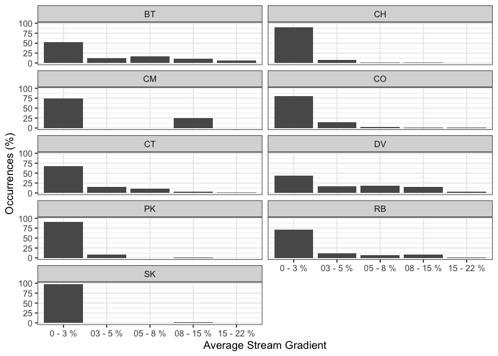
Figure 2.10: Summary of historic fish observations vs. stream gradient category for the Francois Lake, Lower Chilako River, Lower Salmon River, Morkill River, Nechako River, Tabor River, Upper Fraser River, and Willow River watershed groups.
my_caption <- 'Summary of historic fish observations vs. channel width category for the Nechako River, Lower Chilako River, François Lake, Morkill River and Upper Fraser River watershed groups.'
fiss_sum_width |>
dplyr::select(-width_id) |>
fpr::fpr_kable(caption_text = my_caption,
scroll = gitbook_on)| species_code | Width | Count | total_spp | Percent |
|---|---|---|---|---|
| BT | 0 - 2m | 2 | 109 | 2 |
| BT | 02 - 04m | 13 | 109 | 12 |
| BT | 04 - 06m | 20 | 109 | 18 |
| BT | 06 - 10m | 25 | 109 | 23 |
| BT | 10 - 15m | 18 | 109 | 17 |
| BT | 15m+ | 7 | 109 | 6 |
| BT | – | 24 | 109 | 22 |
| CH | 0 - 2m | 2 | 186 | 1 |
| CH | 02 - 04m | 6 | 186 | 3 |
| CH | 04 - 06m | 9 | 186 | 5 |
| CH | 06 - 10m | 38 | 186 | 20 |
| CH | 10 - 15m | 38 | 186 | 20 |
| CH | 15m+ | 79 | 186 | 42 |
| CH | – | 14 | 186 | 8 |
| CM | 0 - 2m | 2 | 4 | 50 |
| CM | 04 - 06m | 1 | 4 | 25 |
| CM | 15m+ | 1 | 4 | 25 |
| CO | 0 - 2m | 8 | 491 | 2 |
| CO | 02 - 04m | 47 | 491 | 10 |
| CO | 04 - 06m | 75 | 491 | 15 |
| CO | 06 - 10m | 110 | 491 | 22 |
| CO | 10 - 15m | 73 | 491 | 15 |
| CO | 15m+ | 93 | 491 | 19 |
| CO | – | 85 | 491 | 17 |
| CT | 0 - 2m | 38 | 572 | 7 |
| CT | 02 - 04m | 97 | 572 | 17 |
| CT | 04 - 06m | 69 | 572 | 12 |
| CT | 06 - 10m | 54 | 572 | 9 |
| CT | 10 - 15m | 26 | 572 | 5 |
| CT | 15m+ | 28 | 572 | 5 |
| CT | – | 260 | 572 | 45 |
| DV | 0 - 2m | 75 | 940 | 8 |
| DV | 02 - 04m | 242 | 940 | 26 |
| DV | 04 - 06m | 134 | 940 | 14 |
| DV | 06 - 10m | 154 | 940 | 16 |
| DV | 10 - 15m | 72 | 940 | 8 |
| DV | 15m+ | 68 | 940 | 7 |
| DV | – | 195 | 940 | 21 |
| PK | 0 - 2m | 2 | 87 | 2 |
| PK | 02 - 04m | 2 | 87 | 2 |
| PK | 04 - 06m | 7 | 87 | 8 |
| PK | 06 - 10m | 15 | 87 | 17 |
| PK | 10 - 15m | 10 | 87 | 11 |
| PK | 15m+ | 44 | 87 | 51 |
| PK | – | 7 | 87 | 8 |
| RB | 0 - 2m | 40 | 1139 | 4 |
| RB | 02 - 04m | 158 | 1139 | 14 |
| RB | 04 - 06m | 135 | 1139 | 12 |
| RB | 06 - 10m | 134 | 1139 | 12 |
| RB | 10 - 15m | 74 | 1139 | 6 |
| RB | 15m+ | 93 | 1139 | 8 |
| RB | – | 505 | 1139 | 44 |
| SK | 0 - 2m | 2 | 45 | 4 |
| SK | 04 - 06m | 1 | 45 | 2 |
| SK | 06 - 10m | 2 | 45 | 4 |
| SK | 10 - 15m | 4 | 45 | 9 |
| SK | 15m+ | 17 | 45 | 38 |
| SK | – | 19 | 45 | 42 |
## bar graph
plot_width <- fiss_sum_width |>
dplyr::filter(!is.na(width_id)) |>
ggplot2::ggplot(ggplot2::aes(x = Width, y = Percent)) +
ggplot2::geom_bar(stat = "identity") +
ggplot2::facet_wrap(~species_code, ncol = 2) +
ggplot2::theme_bw(base_size = 11) +
ggplot2::labs(x = "Channel Width", y = "Occurrences (%)")
plot_width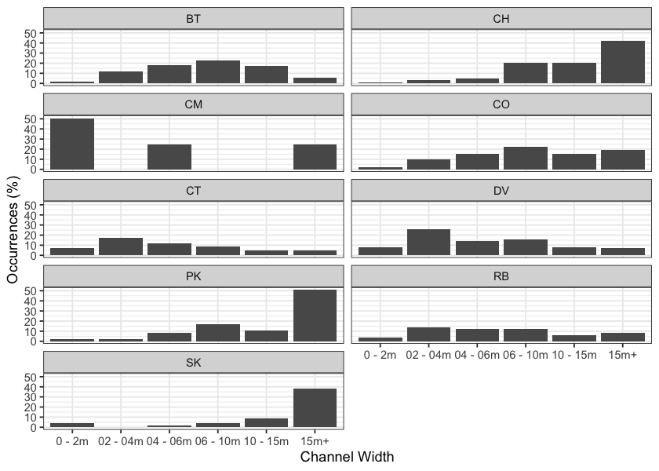
Figure 2.11: Summary of historic fish observations vs. channel width category for the Parsnip River watershed group.
my_caption <- 'Summary of historic fish observations vs. watershed size category for the Nechako River, Lower Chilako River, François Lake, Morkill River and Upper Fraser River watershed groups.'
fiss_sum_wshed |>
fpr::fpr_kable(caption_text = my_caption,
scroll = gitbook_on)| species_code | Watershed | count_wshd | total_spp | Percent |
|---|---|---|---|---|
| BT | 0 - 25km2 | 165 | 446 | 37 |
| BT | 25 - 50km2 | 62 | 446 | 14 |
| BT | 50 - 75km2 | 12 | 446 | 3 |
| BT | 75 - 100km2 | 14 | 446 | 3 |
| BT | 100km2+ | 193 | 446 | 43 |
| CH | 0 - 25km2 | 76 | 800 | 10 |
| CH | 25 - 50km2 | 31 | 800 | 4 |
| CH | 50 - 75km2 | 32 | 800 | 4 |
| CH | 75 - 100km2 | 4 | 800 | 0 |
| CH | 100km2+ | 657 | 800 | 82 |
| CM | 0 - 25km2 | 12 | 49 | 24 |
| CM | 25 - 50km2 | 6 | 49 | 12 |
| CM | 50 - 75km2 | 4 | 49 | 8 |
| CM | 75 - 100km2 | 2 | 49 | 4 |
| CM | 100km2+ | 25 | 49 | 51 |
| CO | 0 - 25km2 | 35 | 137 | 26 |
| CO | 25 - 50km2 | 22 | 137 | 16 |
| CO | 50 - 75km2 | 14 | 137 | 10 |
| CO | 75 - 100km2 | 11 | 137 | 8 |
| CO | 100km2+ | 55 | 137 | 40 |
| CT | 0 - 25km2 | 158 | 284 | 56 |
| CT | 25 - 50km2 | 15 | 284 | 5 |
| CT | 50 - 75km2 | 5 | 284 | 2 |
| CT | 75 - 100km2 | 9 | 284 | 3 |
| CT | 100km2+ | 97 | 284 | 34 |
| DV | 0 - 25km2 | 210 | 322 | 65 |
| DV | 25 - 50km2 | 23 | 322 | 7 |
| DV | 50 - 75km2 | 8 | 322 | 2 |
| DV | 75 - 100km2 | 22 | 322 | 7 |
| DV | 100km2+ | 59 | 322 | 18 |
| PK | 0 - 25km2 | 15 | 48 | 31 |
| PK | 25 - 50km2 | 15 | 48 | 31 |
| PK | 50 - 75km2 | 1 | 48 | 2 |
| PK | 75 - 100km2 | 1 | 48 | 2 |
| PK | 100km2+ | 16 | 48 | 33 |
| RB | 0 - 25km2 | 2867 | 4621 | 62 |
| RB | 25 - 50km2 | 308 | 4621 | 7 |
| RB | 50 - 75km2 | 190 | 4621 | 4 |
| RB | 75 - 100km2 | 395 | 4621 | 9 |
| RB | 100km2+ | 861 | 4621 | 19 |
| SK | 0 - 25km2 | 5 | 52 | 10 |
| SK | 25 - 50km2 | 2 | 52 | 4 |
| SK | 75 - 100km2 | 2 | 52 | 4 |
| SK | 100km2+ | 43 | 52 | 83 |
plot_wshed <- fiss_sum_wshed |>
ggplot2::ggplot(ggplot2::aes(x = Watershed, y = Percent)) +
ggplot2::geom_bar(stat = "identity") +
ggplot2::facet_wrap(~species_code, ncol = 2) +
ggplot2::theme_bw(base_size = 11) +
ggplot2::labs(x = "Watershed Area", y = "Occurrences (%)") +
ggplot2::theme(axis.text.x = ggplot2::element_text(angle = 45, hjust = 1))
plot_wshed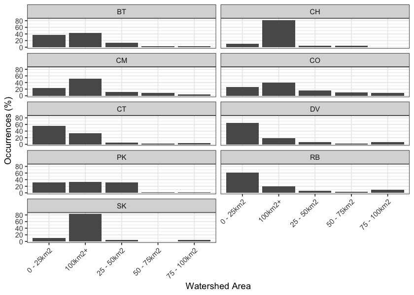
Figure 2.12: Summary of historic fish observations vs. watershed size category for the Nechako River, Lower Chilako River, François Lake, Morkill River and Upper Fraser River watershed groups.